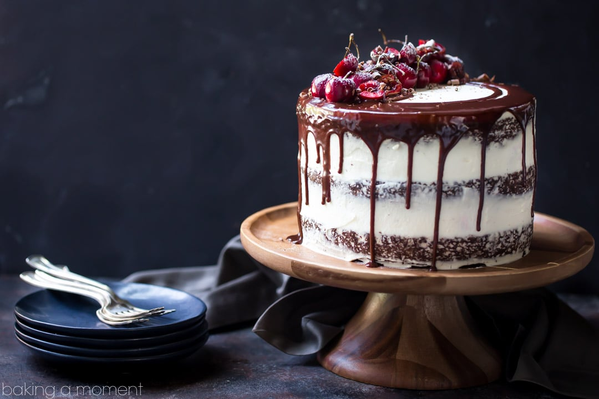

Blagdani i razlicite proslave ne bi bili to sto jesu bez najomiljenijih od svih vrsta kolaca - torti. Iako pecenje kolaca ima dugu tradiciju, torte su se prvi put pojavile tek u 16. stoljeću. Potkraj toga razdoblja nastala je i jedna od najstarijih i najpoznatijih torti, Schwartzwalder, a stotinjak godina poslije i Linzer torta.
